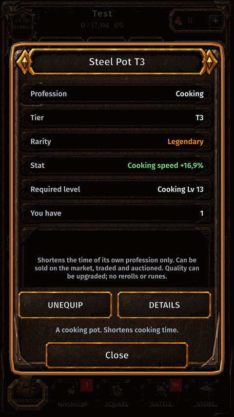

Tools
What it is
Gathering tools (pickaxe, rod, sickle) and workshop tools speed up their profession. Equip them in the tool slot.
How to get there
- INVENTORY.
- Tap the TOOL slot.

Gathering tools (pickaxe, rod, sickle) and workshop tools speed up their profession. Equip them in the tool slot.
